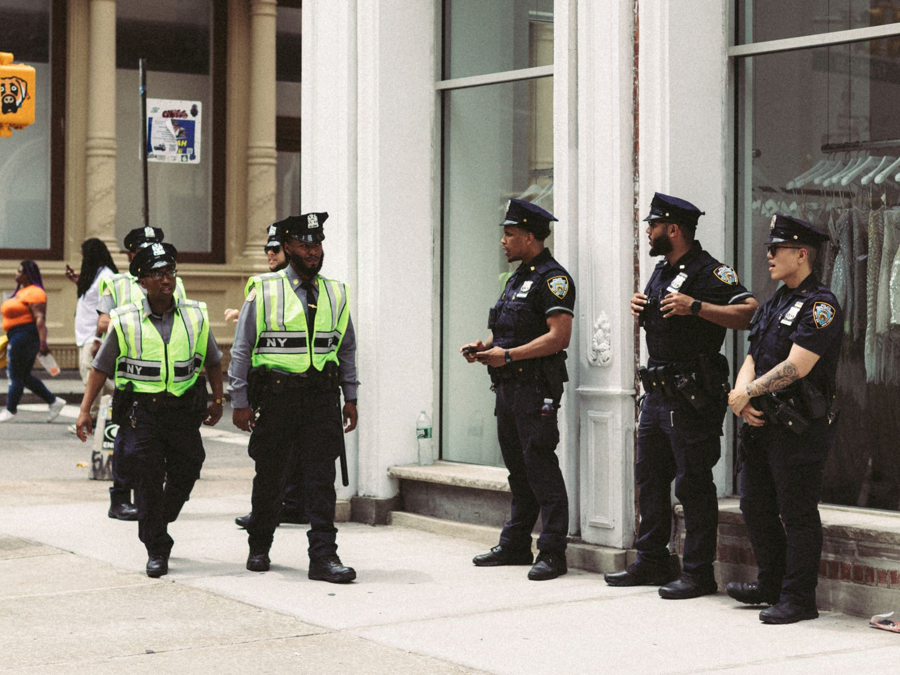

A proud leader facing a budget gap
Cleveland's police chief has recently made headlines by expressing a complex mix of emotions regarding the current state of his department. While he maintains immense pride in the professionalism and bravery of his officers, he has also issued a stark warning about the systemic issues threatening their effectiveness. The core of the problem lies not in the quality of the personnel, but in the financial support provided by the city and state levels of government.
The chief's comments come at a time when many urban police departments across the United States are struggling to balance the demands of modern policing with shrinking or stagnant budgets. For Cleveland, the struggle is becoming increasingly visible in the daily operations of the force. As crime prevention and community engagement become more technologically and resource-intensive, the lack of funding creates a widening chasm between what the police are expected to do and what they are actually equipped to achieve.
The impact of limited resources on safety
When a police department is let down by funding, the consequences ripple through the entire community. It is not just about the number of patrol cars on the street; it is about the ability to maintain specialized units, invest in modern forensic technology, and provide mental health resources for both officers and the citizens they serve. Insufficient funding can lead to slower response times and a decreased ability to investigate complex crimes effectively.
The chief emphasized that while the officers are doing their best with what they have, the current trajectory is unsustainable. Without a significant infusion of capital, the department risks losing the very tools that allow them to stay ahead of evolving criminal tactics. This creates a cycle where officers are perpetually playing catch-up, leading to burnout and decreased morale across the ranks.
Voices from the department
Inside the precinct, the sentiment of being under-resourced is palpable. Officers report that they are often asked to perform tasks that require more sophisticated equipment or more personnel than are currently allocated. This strain is not just physical but psychological, as the weight of community safety rests on a foundation that feels increasingly fragile.
I am incredibly proud of the men and women who wear this badge every day, but I feel like we are being let down by the lack of financial support necessary to do our jobs to the standard our citizens deserve.
This sentiment highlights the disconnect between the political rhetoric surrounding law enforcement and the practical reality of managing a large-scale municipal police force. While leaders may speak of support for the police, the budgetary allocations often tell a different story, prioritizing other municipal needs over the fundamental infrastructure of public safety.
Comparing urban challenges to global crises
The struggle for resources is a theme that resonates far beyond the streets of Cleveland. Whether it is a municipal government trying to fund its police force or international agencies attempting to manage natural disasters, the theme of resource scarcity is universal. In times of crisis, the difference between success and failure often comes down to having the right tools and the right amount of support at the exact moment it is needed most.
We see this pattern in many different contexts. For instance, when looking at how communities respond to sudden, overwhelming environmental shifts, the importance of preparedness and rapid resource deployment becomes clear. It is a concept that applies to both the steady maintenance of city safety and the frantic response to immediate catastrophes.
For a deeper look at how human resilience and resourcefulness manifest during extreme emergencies, you might find interest in our recent coverage of Nepal Flood Rescue: Miracles in the Tunnel Survival at https://dhyey.bond/blog/nepal-flood-rescue-miracles-in-the-tunnel-survival/. Much like the officers in Cleveland, those involved in rescue operations must often rely on sheer will when the available resources fall short of the demand.
Looking toward a potential solution
Resolving the funding crisis in Cleveland will require more than just a one-time grant or a temporary budget increase. It requires a long-term commitment from city officials to view public safety as a foundational investment rather than a variable expense. This includes stable funding for officer salaries, continuous technological updates, and robust support systems for officer wellness.
As the Cleveland police chief continues to advocate for his force, the eyes of the community remain on the city's decision-makers. The ability to provide adequate funding will ultimately determine whether the Cleveland police can continue to protect and serve with the excellence they are currently striving to maintain despite the odds.
See Also
If you enjoyed this Current Events article, check out Nepal Flood Rescue: Miracles in the Tunnel Survival for more useful reading.